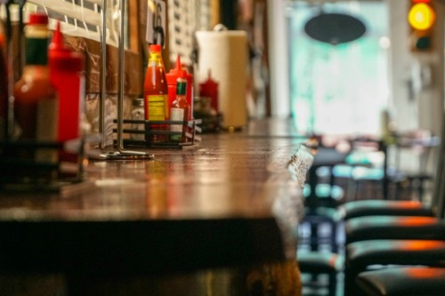
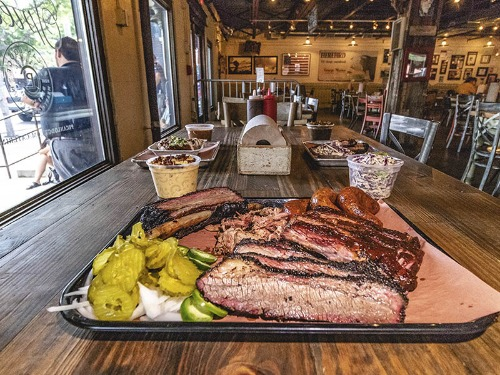

Nuestras Instalaciones
En nuestra sociedad gastronómica de Texas, ubicada en el corazón de Madrid, hemos creado un espacio acogedor y versátil que celebra la rica tradición culinaria de Texas. Disponemos de un amplio jardín, que nos permiten disfrutar del sabor de la buena comida. Es el lugar perfecto para disfrutar de una barbacoa al aire libre, rodeado de amigos y familiares, mientras compartimos risas y anécdotas.
La barbacoa, equipada con todo lo necesario, es el corazón de nuestras reuniones. Aquí, se convierte en el escenario de deliciosos asados, símbolo de la autenticidad texana.
Además, contamos con una amplia cocina y un comedor diseñado para acoger a grupos grandes. Este espacio es ideal para celebrar tus reuniones, eventos y cenas temáticas, donde la buena comida y la compañía se unen para crear momentos inolvidables.
Te invitamos a que vengas y descubras nuestras instalaciones, donde cada rincón está pensado para disfrutar de la gastronomía en un ambiente cálido y amigable. ¡Te esperamos!
 